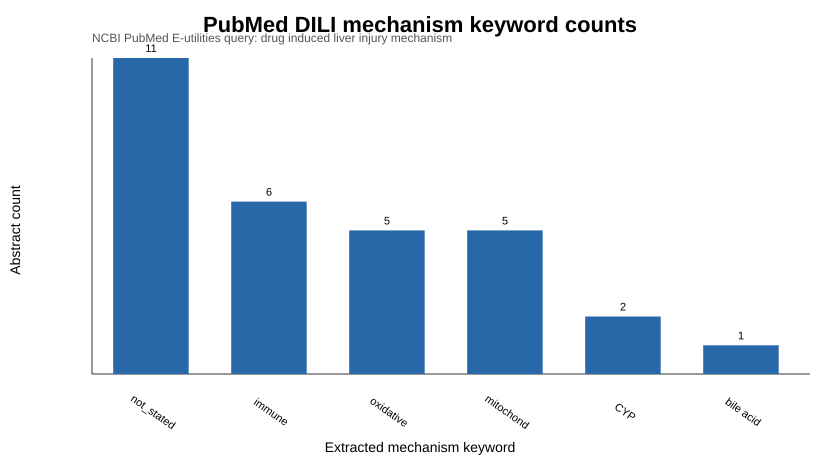

Bench to Bytes portfolio analysis report. Uses only public or synthetic data.
A structured extraction workflow can convert PubMed abstracts into an analyzable table of modalities, targets, model systems, and toxicity mentions.
Public PubMed/E-utilities workflow with a small included demo extraction table covering public literature topics such as CRISPR base editing, kinase inhibitors, and drug-induced liver injury.
outputs/extracted_abstracts.csvfigures/modality_counts.svgsrc/pubmed.pyapp.pyEven a small extraction table becomes useful once normalized: modality counts and target fields can be filtered, summarized, and expanded into larger public literature maps.
